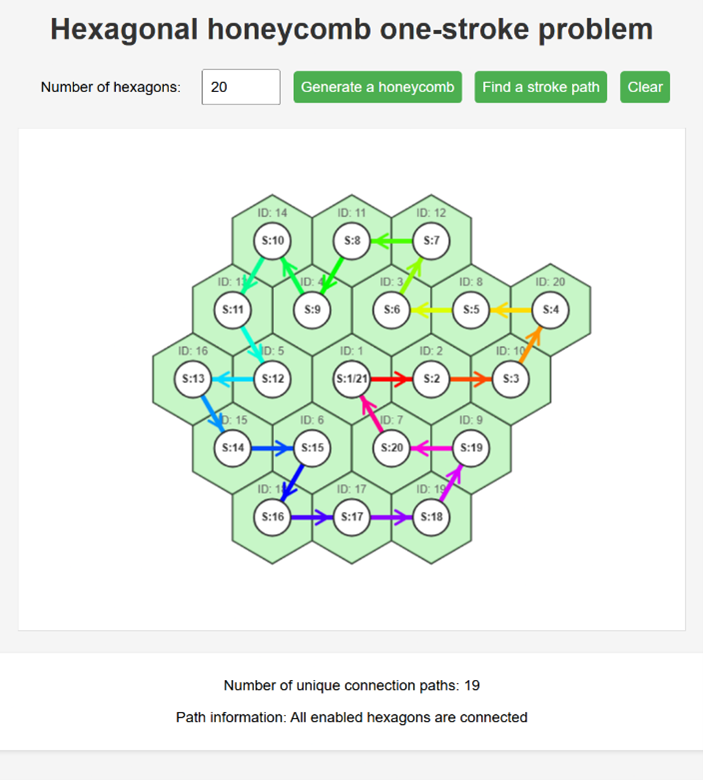

This project is called Water Surface Intelligent Floating Solar Power Generation System.
Macau is highly dependent on imported electricity (more than 88% to 90%) and fresh water (about 96%), and the pressure on energy and water resources is increasing day by day. This design is inspired by the "shade balls" used in American reservoirs to reduce water evaporation, as well as the floating solar power stations on the sea in China, and thus proposes the idea of using the water surface of Macau reservoirs to develop renewable energy. "Smart floating solar power generation system on the water surface" uses a hexagonal honeycomb structure module on the hardware and integrates a buck circuit to convert the unstable high voltage of the solar panel into a stable 12V power output. The ESP32 microcontroller is built into the software, and through the ESP-NOW wireless communication protocol, it realizes long-distance real-time data transmission and decentralized control without relying on routers. It has the following characteristics: Dual environmental benefits: The floating module can cover the water surface to reduce water evaporation while generating electricity, and passively dissipates heat through natural water bodies, effectively improving the power generation efficiency of the solar panel. Interdisciplinary algorithm design: innovatively applies the principle of the "Königsberg Seven Bridges Problem" in mathematics to module connection design to ensure that the connection path of the module array forms a Eurasian loop (closed loop), greatly optimizing the system's connection logic and future inspection and maintenance efficiency. Highly flexible scalability: The modular design can easily adapt to reservoirs of different sizes and support phased expansion.
Below is a program that solves the one-stroke problem in a hexagonal honeycomb.
